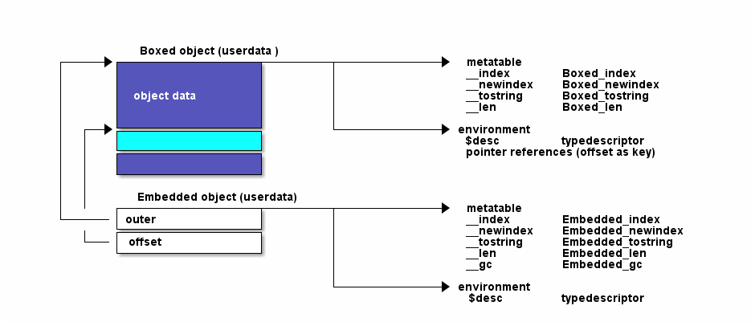

LuaCwrap is a wrapper for C datatypes written in pure C. It utilizes metadata (aka type descriptors) to describe the layout and names of structures, unions, arrays and buffers.
LuaCwrap
Depends on Lua, the Lua development packages. LuaRocks is used for build/install.
Install the following packages
For a beginner I would recommend to install the latest "Lua for Windows" setup from from http://luaforwindows.googlecode.com/ and install LuaCWrap via LuaRocks.
Install on console via
LuaCwrap deals with two types of objects:
The lifetime of both object types are controlled by the Lua VM. Boxed objects are 'toplevel' whereas Embedded objects reference 'embedded' objects within so called 'outer' objects. Because of that Embedded objects have to control the lifetime of their outmost boxed object.
If a boxed object contains a pointer attribute ($ptr) you are able to assign different Lua object types to the pointer attribute. These objects types like strings, userdata and light userdata include LuaCwrap objects which makes it possible to create pointer connected data structures. To couple the lifetime of Lua objects that had been assigned to a pointer attribute to the lifetime of the outer object a reference to the Lua object pointed to is stored within the environment table of the outer object. To handle union types correctly the pointer attribute offset is used as the table key. The table value contains the referenced value.
Sometimes it is necessary to manually control the lifetime of Lua objects pointed to by
pointer attributes. For this reference attributes ($ref) are used. If you assign Lua objects to
reference attributes a reference to the Lua object is stored in a hidden reference table under a unique
integer id. The integer id is assigned to the reference attribute. On reading a reference attribute the
integer id is returned as a reference object. This reference object can be used to access the underlying
Lua object (via refobject.value) the reference index number (via refobject.ref) or to release the
reference manually (via refobject:release()).
Embedded objects can also be used to push C pointers during calls from C to Lua. But in this case you have to be aware that in most cases the C pointer isn't valid after the Lua function scope ends. If you want to store the referenced value you have to duplicate the underlying instance via
The LuaCwrap exports several functions. One of them, the luaopen_luacwrap
function, enables that LuaCwrap could be used from standalone Lua scripts.
The other functions could be bound to by C modules or executables
to be able to register object descriptors or to create/push object instances
on the Lua stack.
Importing LuaCwrap is only necessary if you want to declare your own types via the Lua-API. In this case use the followig line:
C modules which want to provide wrappers usually create their own namespace table to register their types.
For an example see the source code of the testluacwrap module, which is provided with this package
for unit testing.
Every registered type descriptor has two methods new and attach which could be used to
create new instances or create a wrapper around existing userdata.
By default the new function initializes objects with 0. An aditional init parameter
changes this behaviour. If you specify a number as init parameter the object memory is
filled with the given number value.
If you give a lua table the new function it assigns the name/value pairs to
the corresponding attributes. This works recursively for embedded object instances.
An additional set function makes it possible to initialize existing object instances
from a given table of values.
Object attributes can be accessed like Lua table items.
The new function could also be used to duplicate objects. If the first parameter is a
object of the same type the contents of that object are used to initialize the newly created one.
A shorter form is to use the object:__dup() function
You can easily extend struct and union types, that have been registered via luacwrap.
E.g. you have registered a rect structure under the name RECT, then you can add
methods simply by adding them to the RECT type descriptor.
After that you can use these methods as follows:
Since version 1.1.0-1 the C interface is exported it via a C interface struct. This enables dependant C modules to load luacwrap dynamically via the Lua loader and avoids problems with module lookup (especially under Windows).
Typically during the module_open() function the dependant module gets access to the C interface struct with the following code:
The resulting struct pointer (g_luacwrapiface) is then used in subsequent calls.
For these types you have to specify appropriate get and set callbacks which handles
marshalling. Therefore registering basic types is only possible via the C API.
Use the registerbasictype function and see the source of LuaCwrap
for usage examples.
From the C API in most cases you push wrapper objects (light embedded objects) to static instances to call functions with parameters.
From Lua you use the instance as follows:
object:__dup() method to create a clone, which lifetime is controlled
by the Lua VM.
Lifetime of boxed objects is maintained by the Lua garbage collector. To create them from the C API you use the pushboxedobj() function.
From Lua you use the instance as follows:
With the typedesc:attach() function you can attach a light embedded object to an
Lua userdata object which is interpreted as a pointer address. The above C sample could be modified
like this:
From Lua you access the instance as follows:
attach
method acts like a C cast many things could go wrong. So if you use attach be sure
you know what you are doing.
Sometimes the final structure to attach to a given light userdata is not known in advance. It is common practice in several APIs to hava a common header with a type or class field. This field denotes the final structure to use. Attaching could be done via the original light userdata which is also available as
LuaCwrap creates a single module table, where all module global data is stored. The module table contains:
The type descriptor table spans the namespace for all registered types. Type names containing dots are stored in the corresponding subtables. The type table contains predefined types which names start with the '$' character. These are
Buffers are registered within the type table, too. The name of buffer types is derived from the buffer length ($bufn, where n denotes the buffer length). If a buffer with the requested size is already registered, the existing one is returned.
This table is used to control the lifetime of reference attributes ($ref).
Used by the register function to store unique strings used within type descriptors.
LuaCwrap is licensed under the terms of the MIT license reproduced below. This means that LuaCwrap is free software and can be used for both academic and commercial purposes at absolutely no cost.
Copyright (C) 2011 Klaus Oberhofer
Permission is hereby granted, free of charge, to any person obtaining a copy of this software and associated documentation files (the "Software"), to deal in the Software without restriction, including without limitation the rights to use, copy, modify, merge, publish, distribute, sublicense, and/or sell copies of the Software, and to permit persons to whom the Software is furnished to do so, subject to the following conditions:
The above copyright notice and this permission notice shall be included in all copies or substantial portions of the Software.
THE SOFTWARE IS PROVIDED "AS IS", WITHOUT WARRANTY OF ANY KIND, EXPRESS OR IMPLIED, INCLUDING BUT NOT LIMITED TO THE WARRANTIES OF MERCHANTABILITY, FITNESS FOR A PARTICULAR PURPOSE AND NONINFRINGEMENT. IN NO EVENT SHALL THE AUTHORS OR COPYRIGHT HOLDERS BE LIABLE FOR ANY CLAIM, DAMAGES OR OTHER LIABILITY, WHETHER IN AN ACTION OF CONTRACT, TORT OR OTHERWISE, ARISING FROM, OUT OF OR IN CONNECTION WITH THE SOFTWARE OR THE USE OR OTHER DEALINGS IN THE SOFTWARE.